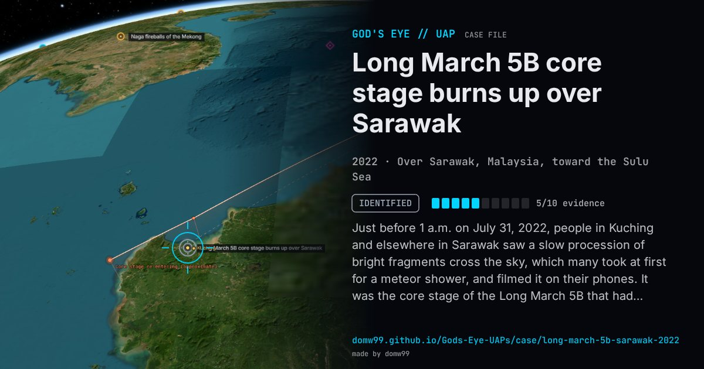

Long March 5B core stage burns up over Sarawak

Just before 1 a.m. on July 31, 2022, people in Kuching and elsewhere in Sarawak saw a slow procession of bright fragments cross the sky, which many took at first for a meteor shower, and filmed it on their phones. It was the core stage of the Long March 5B that had launched China’s Wentian laboratory module a week earlier. Unlike most rocket stages it had reached orbit, and its fall had been tracked and debated for days because China had not released trajectory details. The Malaysian Space Agency said the debris had crossed Malaysian airspace and fallen into the Sulu Sea; pieces were reported in Sarawak and West Kalimantan.
Explanation
The 21-tonne core stage of the Chinese Long March 5B rocket that launched the Wentian space-station module on July 24, 2022, falling back uncontrolled. The Malaysian Space Agency confirmed that its burning debris crossed Malaysian airspace, and the re-entry point was given as 9.1° N, 119.0° E, in the Sulu Sea.
What was seen
Shape: A line of bright fragments, like a slow meteor shower
Witnesses: Residents of Kuching and other parts of Sarawak who filmed it
Duration: About a minute
Sources
- Ministry of Science, Technology and Innovation — press clipping: MYSA on the debris crossing Malaysian airspace
- New Straits Times — Debris from Chinese rocket crosses Malaysian airspace
- The Vibes — Long March 5B debris sparks fiery re-entry off Sarawak’s coasts
Browse
- 2020s
- Identified
- Tracked object events
- Official government documents
- Many independent witnesses
- Video footage
- Formations and rows of lights